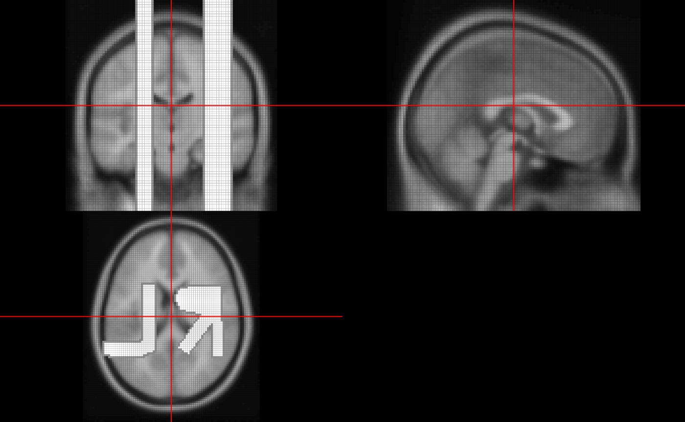
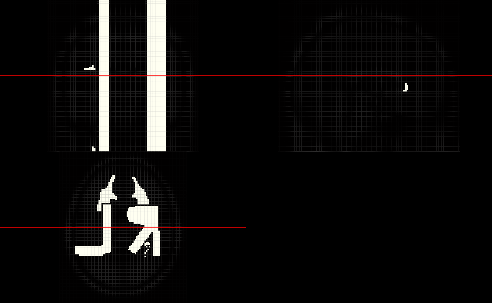
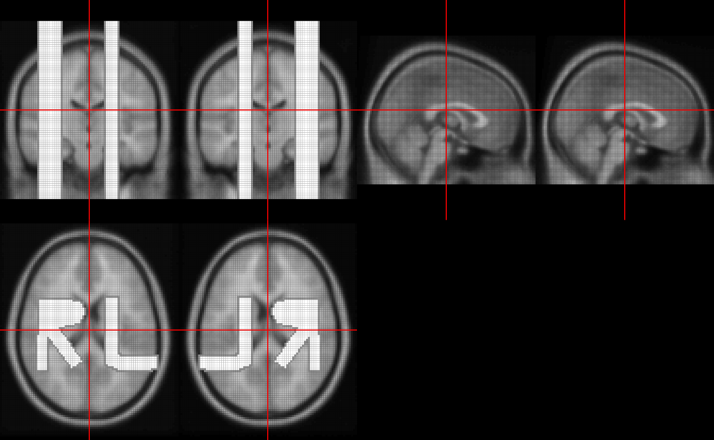
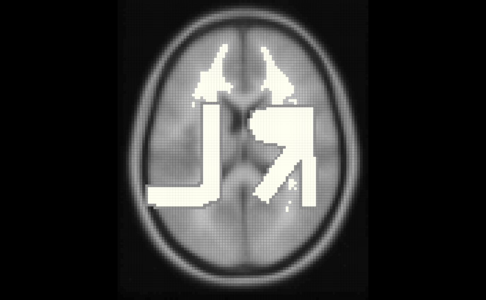

NIfTI Basics
John Muschelli
2017-06-29
The nifti object
Note: Throughout this post, I will refer to an image on hard disk as a NIfTI, which is a file that generally has the extension “.nii” or “.nii.gz”. I will refer to the object in R as a nifti (note the change of font and case).
In this tutorial we will discuss the basics of the nifti object in R. There are many objects in R that represent imaging data. The Neuroconductor project chose the nifti object from the oro.nifti package as one of the the basic building blocks because it has been widely used in other packages, has been tested over a period of time, and inherits the properties of an array in R.
S4 Implementation
As nifti objects inherits the properties of an array, you can perform a series of operations on them, such as addition/subtraction/division, as you would an array. A nifti object has additional attributes and the nifti object is an S4 object. This means that you do not reference additional information using the $ operator.
library(oro.nifti)
set.seed(20161007)
dims = rep(10, 3)
arr = array(rnorm(10*10*10), dim = dims)
nim = oro.nifti::nifti(arr)
print(nim)## NIfTI-1 format
## Type : nifti
## Data Type : 2 (UINT8)
## Bits per Pixel : 8
## Slice Code : 0 (Unknown)
## Intent Code : 0 (None)
## Qform Code : 0 (Unknown)
## Sform Code : 0 (Unknown)
## Dimension : 10 x 10 x 10
## Pixel Dimension : 1 x 1 x 1
## Voxel Units : Unknown
## Time Units : Unknownprint(class(nim))## [1] "nifti"
## attr(,"package")
## [1] "oro.nifti"oro.nifti::is.nifti(nim)## [1] TRUE
Accessing Information from a nifti
To access additional information, called a slot, you can use the @ operator. We do not recommend this, as there should be a function implemented to “access” this slot. These are hence called accessor functions (they access things!). For example, if you want to get the cal_max slot of a nifti object, you should use the cal_max function. If an accessor function is not implemented, you should still use the slot(object, name) syntax over @.
Here’s an example where we make an array of random normal data, and put that array into a nifti object with the nifti function:
nim@cal_max## [1] 2.706524cal_max(nim)## [1] 2.706524slot(nim, "cal_max")## [1] 2.706524Accessing the “data”
If you want to access the “data” of the image, you can access that using:
data = slot(nim, ".Data")
class(data)## [1] "array"With newer versions of oro.nifti (especially that on GitHub and in Neuroconductor), there is a img_data function to access the data:
data = oro.nifti::img_data(nim)
class(data)## [1] "array"dim(data)## [1] 10 10 10This array is 3-dimensional and can be subset using normal square-bracket notations ([row, column, slice]). Thus, if we want the 3rd “slice” of the image, we can use:
slice = data[,,3]
class(slice)## [1] "matrix"Thus we see we get a matrix of values from the 3rd “slice”. We should note that we generally reference an image by x, y, and z planes (in that order). Most of the time, the x direction refers to going left/right on an image, y refers to front/back (or anterior/posterior), and the z direction refers to up/down (superior/inferior). The actual direction depends on the header information of the NIfTI image.
slice = data[,,3, drop = FALSE]
class(slice)## [1] "array"Show all slots
You can see which slots exist for a nifti object by using slotNames
slotNames(nim)## [1] ".Data" "sizeof_hdr" "data_type" "db_name"
## [5] "extents" "session_error" "regular" "dim_info"
## [9] "dim_" "intent_p1" "intent_p2" "intent_p3"
## [13] "intent_code" "datatype" "bitpix" "slice_start"
## [17] "pixdim" "vox_offset" "scl_slope" "scl_inter"
## [21] "slice_end" "slice_code" "xyzt_units" "cal_max"
## [25] "cal_min" "slice_duration" "toffset" "glmax"
## [29] "glmin" "descrip" "aux_file" "qform_code"
## [33] "sform_code" "quatern_b" "quatern_c" "quatern_d"
## [37] "qoffset_x" "qoffset_y" "qoffset_z" "srow_x"
## [41] "srow_y" "srow_z" "intent_name" "magic"
## [45] "extender" "reoriented"If you would like to see information about each one of these slots, please see this blog post about the NIfTI header.
Other objects
Other packages, such as ANTsR and RNifti have implemented faster reading/writing functions of NIfTI images. These rely on pointers to object in memory and are very useful. They have specific implementations for extracting information from them and saving them out, such as in an Rda/rda (R data file). A series of conversion tools for ANTsR objects are included in the extrantsr package (function ants2oro) and nii2oro in oro.nifti for RNifti objects.
NIfTI Input/Output: readnii/writenii vs. readNIfTI/writeNIfTI
In the neurobase package, we provide wrapper functions readnii/writenii, which wrap the oro.nifti functions readNIfTI/writeNIfTI. There are a few reasons for this:
- You can pass a filename with a “.nii.gz” extension to
writeniiand an additional “.nii.gz” will not be added, whereas this will happen inwriteNIfTI. -
writeniiwill try to discern the data type of the image before writing, which may be useful if you created aniftiby copying information from a previousniftiobject. - The default in
readniiisreorient = FALSE, which generally does not error when reading in data, whereasreadNIfTIdefaults toreorient = TRUE. This is discussed below. - Extraneous dimensions are automatically deleted with
readnii. Note this may cause errors and is not desired 100% of the time.
Option reorient = FALSE
In readNIfTI default reorient = TRUE implicity uses the reorient function from oro.nifti. Although many neuroimaging software suites read the header and reorient the data based on that information, oro.nifti::reorient can only handle simple orientations, see oro.nifti::performPermutation documentation. Although reading the data in without reorienting can cause problems, such as not knowing right/left orientation, if multiple NIfTI files were created in the same way (assumingly from dcm2nii), they should ideally have the same orientation.
Derived data from an image will have the exact same orientation because derived nifti objects will copy the nifti header information from the nifti object it was derived from. Moreover, in many analyses, registration to an image or a template is common, and these have known orientations. We have found that if a user wants to reorient their data in R, using the reorient function can be used, but we prefer the default to be FALSE, otherwise reading in many NIfTI files result in an error from the orientation.
Operations of nifti objects
Although the nifti object is not a standard R object, you can perform standard operations on these objects, such as addition/subtraction and logic. This is referred to “overloaded” operators.
Logical operators
For example, if we want to create a nifti object with binary values, where the values are TRUE if the values in nim are greater than 0, we can simply write:
above_zero = nim > 0
class(above_zero)## [1] "nifti"
## attr(,"package")
## [1] "oro.nifti"img_data(above_zero)[1]## [1] TRUEWe will refer to binary images/nifti objects as “masks”.
We can combine multiple operators, such as creating a binary mask for value greater than 0 and less than 2.
class(nim > 0 & nim < 2)## [1] "nifti"
## attr(,"package")
## [1] "oro.nifti"
Arithmetic on nifti objects
We can also show the
class(nim * 2)## [1] "nifti"
## attr(,"package")
## [1] "oro.nifti"class(nim + (nim / 4))## [1] "nifti"
## attr(,"package")
## [1] "oro.nifti"class(nim * nim)## [1] "nifti"
## attr(,"package")
## [1] "oro.nifti"class(nim^2)## [1] "nifti"
## attr(,"package")
## [1] "oro.nifti"Summaries
How many values actually are greater than zero? Here, we can use standard statistical functions, such as sum to count the number of TRUE indices:
sum(above_zero)## [1] 513and similarly find the proportion of TRUE indices by taking the mean of these indicators:
mean(above_zero)## [1] 0.513Again, as nifti is an S4 object, it should have the functionality described in the details of the help file for methods::S4groupGeneric:
min(nim)## [1] -3.517075max(nim)## [1] 2.706524range(nim)## [1] -3.517075 2.706524class(abs(nim))## [1] "nifti"
## attr(,"package")
## [1] "oro.nifti"
Visualization of nifti objects
Here we will use real imaging data from the oro.nifti package:
fname = system.file(
file.path("nifti", "mniRL.nii.gz"),
package = "oro.nifti")
eve = readnii(fname)Orthographic view
The oro.nifti::orthographic function provides great functionality on displaying nifti objects in 3 different planes.
oro.nifti::orthographic(eve)
The neurobase::ortho2 function expands upon this with some different defaults.
neurobase::ortho2(eve)
We see that in ortho2 there are annotations of the orientation of the image. Again, if the image was not reoriented, then these many not be corrrect. You can turn these off with the add.orient argument:
neurobase::ortho2(eve, add.orient = FALSE)
Differences between orthographic and ortho2
The above code does not fully illustrate the differences between orthographic and ortho2. One marked difference is when you would like to “overlay” an image on top of another in an orthograhic view. Here we will highlight voxels greater than the 90th quantile of the image:
orthographic(eve, y = eve > quantile(eve, 0.9))
We see that the white matter is represented here, but we would like to see areas of the brain that are not over this quantile to be shown as the image. Let us contrast this with:
ortho2(eve, y = eve > quantile(eve, 0.9))We see the image where the mask is 0 shows the original image. This is due to the NA.y argument in ortho2. The ortho2 (and orthograhic) function is based on the graphics::image function in R, as well as many other functions we will discuss below. When graphics::image sees an NA value, it does not plot anything there. The NA.y argument in ortho2 makes it so any values in the y argument (in this case the mask) that are equal to zero are turned to NA.
Bright values
If you have artifacts or simply large values of an image, it can “dampen” the viewing of an image. Let’s make one value of the eve template very large. We will set the voxel with the largest value to be that value times 5 :
eve2 = eve
eve2[which.max(eve)] = eve2[which.max(eve)] * 5Let’s plot this image again:
ortho2(eve2)We see a faint outline of the image, but this single large value affects how we view the image. The function robust_window calculates quantiles of an image, by default the 0 (min) and 99.9th quantile, and sets values outside of this range to that quantile. If you are familiar with the process of Winsorizing, this is the exact same procedure. Many times we use this function to plotting, but could be thought of an outlier dampening procedure. Let’s plot this windowed image:
ortho2(robust_window(eve2))Changing the probs argument in robust_window, which is passed to quantile, can also be used to limit artifacts with remarkably low values. The zlim option can also denote which range of intensities that can be plotted:
ortho2(eve2, zlim = quantile(eve2, probs = c(0, 0.999)))
This is a bit more like trimming, however.
Double orthographic view
Sometimes you would like to represent 2 images side by side, of the same dimensions and orientation of course. The double_ortho function allows you to do this. Let’s read in the flipped image:
flipped_fname = system.file(
file.path("nifti", "mniLR.nii.gz"),
package = "oro.nifti")
flipped_eve = readnii(flipped_fname)We can view the original T1 alongside the brain-extracted image:
double_ortho(flipped_eve, eve)
Single slice view
We may want to view a single slice of an image. The oro.nifti::image function can be used here. Note, graphics::image exists and oro.nifti::image both exist. The oro.nifti::image allows you to just write image(nifti_object), which performs operations and calls functions using graphics::image. This allows the user to use a “generic” version of image, which oro.nifti adapted specifically for nifti objects. You can see the help for this function in ?image.nifti.
Let’s plot an image of the 90th slice of eve
image(eve, z = 45)What happened? Well, the default argument plot.type in image.nifti is set for "multiple", so that even if you specify a slice, it will plot all slices. Here, if we pass plot.type = "single", we get the single slice we want.
image(eve, z = 45, plot.type = "single")If we put multiple slices with plot.type = "single", then we will get a view of these 2 slices.
image(eve, z = c(45, 50), plot.type = "single")Overlaying slices
We can also overlay one slice of an image upon another using the oro.nifti::overlay function. Here we must specify plot.type again for only one slice.
overlay(eve, y = eve > quantile(eve, 0.9), z = 45, plot.type = "single")We have not yet implemented overlay2 (at the time of running this), which has the NA.y option, but will in the future. We can do this prior to plotting and pass in this NA’d mask:
mask = eve > quantile(eve, 0.9)
mask[ mask == 0] = NA
overlay(eve, y = mask, z = 45, plot.type = "single")
rm(list = "mask")Dropping empty dimensions
In some instances, there are extraneous slices to an image. For example, in the Eve template image we read in, it is just the brain. Areas of the skull and extracranial tissue are removed, but the slices remain so that the brain image and the original image are in the same space with the same dimensions. For plotting or further analyses, we can drop these empty dimensions using the neurobase::dropEmptyImageDimensions function or drop_empty_dim shorthand function.
By default, if one nifti is passed to the function and keep_ind = FALSE, then the return is a nifti object.
reduced = dropEmptyImageDimensions(eve)
dim(eve)## [1] 91 109 91dim(reduced)## [1] 91 109 91We can now plot the reduced image:
ortho2(reduced)
which we can contrast with the plotting the full image
ortho2(eve)
Dropping with multiple images
You can pass in other images in the other.imgs function to applying this dropping procedure. For example, let’s say you have 3 images, a T1, T2, and FLAIR image that are all registered to the T1 image and have a brain mask from the T1 image. You can pass in the mask image and pass in the other images into other.imgs so they all drop the same slices and are the same dimensions after the procedure (as they were the same prior), whereas if you performed the operation you may not be ensured to drop exactly the same slices due to some modalities allowing values of zero (albeit highly unlikely).
Adding back the dropped dimensions
To reverse this procedure, the replace_dropped_dimensions function will add back dimensions to the image correctly using the indices from drop_empty_dim. Here is an example:
dd = dropEmptyImageDimensions(eve, keep_ind = TRUE)
reduced = dd$outimg
reversed = replace_dropped_dimensions(img = reduced,
inds = dd$inds,
orig.dim = dd$orig.dim)
all(reversed == eve)## [1] TRUE
Manipulating nifti images
Creating copies of nifti
Sometimes you want to create a copy of a nifti object. Many times performing an operation will create this output for you. Other times, you may want a shell nifti object.
Copying header information
If you have an array, you can simply write:
dims = dim(eve)
arr = array(rnorm(prod(dims)), dim = dims)
nim = nifti(arr)
nim## NIfTI-1 format
## Type : nifti
## Data Type : 2 (UINT8)
## Bits per Pixel : 8
## Slice Code : 0 (Unknown)
## Intent Code : 0 (None)
## Qform Code : 0 (Unknown)
## Sform Code : 0 (Unknown)
## Dimension : 91 x 109 x 91
## Pixel Dimension : 1 x 1 x 1
## Voxel Units : Unknown
## Time Units : Unknownbut the header information of the nifti output nim does not match that of eve. The copyNIfTIHeader function allows you to…copy the NIfTI header:
nim = copyNIfTIHeader(img = eve, arr = nim)
nim## NIfTI-1 format
## Type : nifti
## Data Type : 4 (INT16)
## Bits per Pixel : 16
## Slice Code : 0 (Unknown)
## Intent Code : 0 (None)
## Qform Code : 0 (Unknown)
## Sform Code : 4 (MNI_152)
## Dimension : 91 x 109 x 91
## Pixel Dimension : 2 x 2 x 2
## Voxel Units : mm
## Time Units : secCreating a “shell”
The niftiarr function does much of the same functionality of copyNIfTIHeader, but copyNIfTIHeader you have an array or nifti in the arr argument. If you wanted a nifti object with the same header as eve, but all zeroes, you can use niftiarr:
zeroes = niftiarr(eve, 0)The main difference is the line in niftiarr:
if (!is(arr, "array")){
arr = array(arr, dim=dim(img))
}which implies that if you pass in a vector instead of an array, it will create an array on the fly. Sometimes you want an operation to error if arr is not an array (as in copyNIfTIHeader) or be able to pass in a vector and get the correct output niftiarr.
Technical note: This code is legacy and somewhat old and probably can (and may be) replaced by making copyNIfTIHeader a generic and having different versions for when arr is an array or vector.
Masking
Many times you mask an image based on a binary mask. This means any values where the mask is 1, the values will remain, and if the mask is zero or NA, they will be changed (to either zero or NA).
The operation of masking is simply multiplication, multiplying an array by a binary (with or without NAs). Although this is simple, we have created the mask_img function to perform some checking on the mask, such as are all values 0/1. It also has the argument allow.NA, which denotes whether NAs should be allowed or not in the mask.
Here we will simply mask out values of eve that are less than the mean:
eve_masked = mask_img(eve, eve > mean(eve))ortho2(eve_masked)
Vectorizing a nifti
To convert a nifti to a vector, you can simply use the c() operator:
vals = c(eve)
class(vals)## [1] "integer"Note an array can be reconstructed by using array(vals, dim = dim(eve)) and will be in the correct order as the way R creates vectors and arrays.
From these values we can do all the standard plotting/manipulations of data. For example, let’s do a marginal density of the values:
plot(density(vals))This plot is good, but it’s over all voxels in the image, which are mostly zero due to the background. Therefore we see a large spike at zero, but not much information of the distribution of values within the mask. We need to subset the values by the mask.
Subsetting via masks
In a previous example, we calculated the mean of eve over the entire image. Many times we want to calculate values over a mask. For example, let’s get the mean of all voxels in the mask, where the mask is any value of eve greater than zero. We can do this by subsetting the values in the mask and then calculating the mean:
vals = eve[ eve > 0 ]
mean(vals)## [1] 82.90267mean(eve)## [1] 82.89716We see that the mean of the voxels in the mask versus all voxels is very different, because the voxels not in the mask are simply adding zeroes to the calculation. We could simply do the same by making zero voxels NA and adding the na.rm argument to TRUE for the mean.
mask = eve > 0
mask[ mask == 0 ] = NA
eve_masked = mask_img(eve, mask)
mean(eve_masked)## [1] NAmean(eve_masked, na.rm = TRUE)## [1] 82.90267Again, as nifti objects inherits properties from array objects, we can subset using logical indices, as above in mask == 0 and could use indices such as which(mask == 0).
We can do a marginal density of the values only in the mask:
vals = eve[ eve > 0 ]plot(density(vals))For most plotting functions, we can also add in a mask argument to plot values only for that masked data.
plot(density(eve, mask = eve > 0))